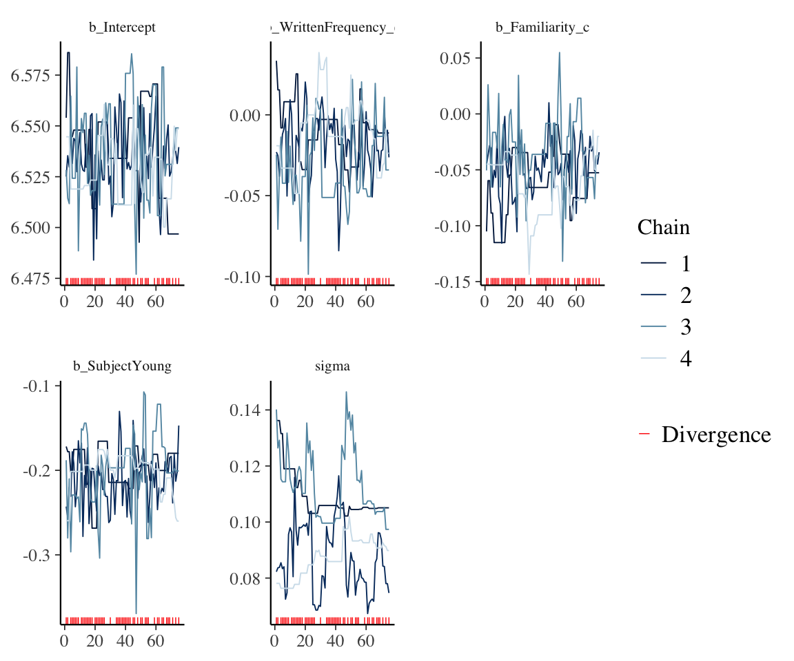

library(tidyverse)
library(brms)
library(broom) # for tidy model summaries
library(tidybayes)
library(bayestestR)
library(languageR) # for `english' dataset
library(arm)
library(bayesplot)
library(loo)
library(emmeans) # for working with multi-level factors4 Bayesian Regression Models 2
These lecture notes cover topics from:
- McElreath (2020) Sec. 7.3-7.5.1, 9.3, 9.4-9.5
- Kurz (2023), same sections (7.3-7.5.1, …)
- To review as necessary: Sec. 7.2 and 7.3 of RMLD (Sonderegger 2023)
- On contrast coding and post-hoc tests for frequentist models
- Assumed as background for Section 4.4 below.
The McElreath/Kurz reading above is overkill if you just want to understand the basics of model quality metrics and model diagnostics, illustrated in this file. It will give you a good background in exactly what these metrics/diagnostics are doing, but some students don’t find this useful. TODO for the future: list two possible readings from McElreath, for less and more detail.
Topics:
- Model quality metrics
- Checking a fitted model
- Posterior plots
- MCMC diagnostics
- Multi-level factors and contrasts
4.1 Preliminaries
Load libraries we will need:
Practical note
If you have loaded rethinking, you need to detach it before using brms. See Kurz (2023) Sec. 4.3.1.
I use the file argument when fitting brms models to make compiling this document easier (so the models don’t refit every time I compile). You may or may not want to do this for your own models. See file and file_refit arguments in ?brm.
We’ll make greater use today of the bayesplot package, which we previously used for posterior predictive checks (Chapter 2). This package also has extensive functionality for plotting MCMC draws and plotting MCMC diagnostics (such as trace plots), as covered in useful vignettes and the bayesplot paper (Gabry et al. 2019).
We’ll start using the loo package Vehtari et al. (2024), which implements methods for calculating model quality criteria from Vehtari, Gelman, and Gabry (2017) that use “pointwise out-of-sample prediction accuracy”: LOO-CV and WAIC. See vignette.
4.1.1 Datasets
Load the diatones dataset and perform some data cleaning and recoding (see Section 1.1, Section 3.1.1):
diatones <- read.csv("https://osf.io/tqjm8/download", stringsAsFactors = TRUE)
# make numeric versions of all categorical predictors, while saving original versions
diatones <- diatones %>% mutate(
syll1_coda_orig = syll1_coda,
syll2_coda_orig = syll2_coda,
syll2_td_orig = syll2_td,
## turns no/yes -> 0/1
syll1_coda = ifelse(syll1_coda == "no", 0, 1),
## turns '0'/'C'/'CC'/'CCC' -> 0/1/2/3
syll2_coda = str_count(syll2_coda_orig, "C"),
syll2_td = ifelse(syll2_td == "no", 0, 1)
)
## standardize all predictors using arm::rescale
diatones <- diatones %>% mutate(
syll1_coda = rescale(syll1_coda_orig),
syll2_td = rescale(syll2_td_orig),
syll2_coda = rescale(syll2_coda),
frequency = rescale(frequency)
)We also will use the english dataset from languageR, defining \(n=250\) and \(n = 25\) subsets after centering variables we’ll use in models below—all as in previous chapters.
# center predictors
english <- mutate(english,
WrittenFrequency_c = scale(WrittenFrequency, scale = FALSE),
Familiarity_c = scale(Familiarity, scale = FALSE),
SubjectYoung = as.numeric(AgeSubject) - 1.5
)
## set seed, so you'll get the same "random" sample
set.seed(100)
english_250 <- english[sample(1:nrow(english), 250), ]
## set seed, so you'll get the same "random" sample
set.seed(10)
english_25 <- english[sample(1:nrow(english), 25), ]Finally, we load the french_cdi_24 dataset. It is described in Sec. 7.1.1. of RMLD (and in ?sec-hw1 of this e-book), where you can learn more if needed.
french_cdi_24 <- read.csv(file = "https://osf.io/uhd2n/download", stringsAsFactors = TRUE)Perform pre-processing described in Sec. 7.1.1. of RMLD:
french_cdi_24 <- filter(french_cdi_24, data_id == 140275) %>%
filter(lexical_class != "other") %>%
mutate(lexical_class = fct_relevel(lexical_class, "function_words", "verbs", "adjectives", "nouns")) %>%
droplevels()This restricts the data to a single child (140275), aged 24 months, and relevels lexical_class in the theoretically-expected order.
4.2 Model quality metrics
Summarizing McElreath (2020) Sec. 7.4:
The ideal for model quality metrics is out-of-sample deviance. This can never be computed, so we approximate using leave-one-out-cross-validation. This is usually impractical to compute—it would require refitting the model \(n\) times, where \(n\) = number of observations. So we approximate, in one of two ways
- PSIS-LOO-CV (“Pareto-smoothed importance-sampling leave-one-out cross-validation”), a.k.a. PSIS
- Implemented as
loo()in the loo package - WAIC (“Widely-applicable information criterion”)
- Implemented as
waic()
In principle, these are different approaches, based on cross-validation versus calculating an information criterion, analagous to AIC/BIC for frequentist models. In practice, both PSIS and WAIC measure the same thing (out-of-sample deviance), and the larger the dataset, the more similar they will be.
If they give different qualitative results (with no errors in WAIC/PSIS calculation) you should be circumspect.
Practical note: PSIS or WAIC?
Which of PSIS or WAIC should actually be used for model comparison in a concrete case? McElreath notes that PSIS and WAIC may each be better for different model types (Sec. 7.4.3), but seems to recommend defaulting to PSIS, because it “has a distinct advantage in warning the user about when it is unreliable” via the \(k\)-values it computes for each observation. However, WAIC is faster to compute—much faster, for large datasets or complex models—and the current WAIC implementation in loo also reports when it’s probably unreliable (and recommends using PSIS instead).
My usual workflow for model comparison is:
- First use WAIC
- If there are warnings, switch to PSIS (a.k.a. “loo”, in the loo package)
- If there are warnings about Pareto \(k\) values being too large, follow the package’s recommendation to compute PSIS with moment matching instead (see
?loo_moment_match).
My understanding is that Options 1–3 are (usually) progressively more accurate and slower.
4.2.1 Example: nonlinear effect of WrittenFrequency
This section assumes as background the introduction to non-linear effects of predictors in Sec. 7.5 of RMLD, especially Sec. 7.5.3, where a similar example for frequentist linear regression is given.
The empirical effect of frequency (WrittenFrequency) on reaction time (RTlexdec) for the english_250 data is:
Code
english_250 %>% ggplot(aes(x = WrittenFrequency, y = RTlexdec)) +
geom_point() +
geom_smooth(aes(color = AgeSubject))
## `geom_smooth()` using method = 'loess' and formula = 'y ~ x'It’s not immediately clear here whether the effect is linear or non-linear, and what degree the non-linear effect would be.
We assess this by comparing models fit with AgeSubject and different effects of WrittenFrequency:
- Linear effect of
WrittenFrequency(equivalent toenglish_m43from Section 3.3) - Polynomial effect of
WrittenFrequency, degree=2 (quadratic) - Polynomial effect of
WrittenFrequency, degree=3 (cubic) - Polynomial effect of
WrittenFrequency, degree=4 (quartic)
Fit these models, using the same priors as in Section 3.3:
prior_1 <- c(
prior(normal(0, 100), class = Intercept),
prior(normal(0, 5), class = b),
prior(exponential(1), class = sigma)
)
english_m51 <-
brm(
data = english_250,
RTlexdec ~ 1 + WrittenFrequency_c + SubjectYoung,
family = gaussian,
prior = prior_1,
file = "models/english_m51.brm"
)
english_m52 <-
brm(
data = english_250,
RTlexdec ~ 1 + poly(WrittenFrequency_c, 2) + SubjectYoung,
family = gaussian,
prior = prior_1,
file = "models/english_m52.brm"
)
english_m53 <-
brm(
data = english_250,
RTlexdec ~ 1 + poly(WrittenFrequency_c, 3) + SubjectYoung,
family = gaussian,
prior = prior_1,
file = "models/english_m53.brm"
)
english_m54 <-
brm(
data = english_250,
RTlexdec ~ 1 + poly(WrittenFrequency_c, 4) + SubjectYoung,
family = gaussian,
prior = prior_1,
file = "models/english_m54.brm"
)While the loo() and waic() functions can be applied to a fitted model to calculate PSIS or WAIC, the recommended workflow is instead to add them to the fitted model using add_criterion(). This saves the specified criterion to the model file (indicated by the file argument when you fit the model) so it is only calculated once per fitted model. This is useful because PSIS/WAIC take a lot of time to compute, especially for more complex models.
## add both WAIC and LOO
english_m51 <- add_criterion(english_m51, c("waic", "loo"))
english_m52 <- add_criterion(english_m52, c("waic", "loo"))
english_m53 <- add_criterion(english_m53, c("waic", "loo"))
english_m54 <- add_criterion(english_m54, c("waic", "loo"))Example WAIC and LOO output for one model:
waic(english_m53)
##
## Computed from 4000 by 250 log-likelihood matrix.
##
## Estimate SE
## elpd_waic 263.9 12.3
## p_waic 5.4 0.7
## waic -527.8 24.5
loo(english_m53)
##
## Computed from 4000 by 250 log-likelihood matrix.
##
## Estimate SE
## elpd_loo 263.9 12.3
## p_loo 5.4 0.7
## looic -527.8 24.5
## ------
## MCSE of elpd_loo is 0.0.
## MCSE and ESS estimates assume MCMC draws (r_eff in [0.5, 1.7]).
##
## All Pareto k estimates are good (k < 0.7).
## See help('pareto-k-diagnostic') for details.The most important output here is:
- The Estimate and SE of PSIS (a.k.a. “LOO”) and WAIC, in the
waicandlooicrows.- Note that a rough 95% CredI of WAIC or PSIS would be Estimate +- 1.96*SE.
- Pareto \(k\) estimates
- These values, one per observation, go into the calculation of PSIS-LOO.
- When \(k>\) some threshold, by default 0.7, LOO is unreliable.
- Observations with \(k>\) threshold are influential/potential “outliers”.
Other output is less important.1
Note how similar LOO and WAIC are for this dataset, as expected for large enough \(n\) (here, \(n=250\)).
These metrics can be used for model comparison via the loo_compare() function from loo:
loo_compare(english_m51, english_m52, english_m53, english_m54, criterion = "waic")
## elpd_diff se_diff
## english_m53 0.0 0.0
## english_m52 -0.6 1.4
## english_m54 -0.7 0.2
## english_m51 -1.2 1.8
loo_compare(english_m51, english_m52, english_m53, english_m54, criterion = "loo")
## elpd_diff se_diff
## english_m53 0.0 0.0
## english_m52 -0.6 1.4
## english_m54 -0.8 0.3
## english_m51 -1.2 1.8For example: the difference in deviance (ELPD) based on WAIC between the cubic (english_m53) and quadratic (english_m52) models is 0.6, with standard error of 1.4. Thus, a rough 95% CredI for this difference in deviance is \([0.6 - 1.96*1.4, 0.6 + 1.96*1.4]\) = \([-2.1, 3.3]\).
In terms of LOO or WAIC, the cubic model (english_m53) wins: it has lower LOO than model english_52 by 0.6, which is lower than english_m54 by 0.2 (difference between 0.8 and 0.6), and so on. So we’d choose the cubic model.
The SE values suggest a slightly more complex picture: the 95% CIs for the difference in deviance with the next-best model (quadratic) or the least-good model (linear) overlap, but the 95% CI with the next-next-best model (quartic) does not:
# 95% CI of diff: overlaps 0
loo_compare(english_m53, english_m52)
## elpd_diff se_diff
## english_m53 0.0 0.0
## english_m52 -0.6 1.4
# 95% CI of diff: doesn't overlap 0
loo_compare(english_m53, english_m54)
## elpd_diff se_diff
## english_m53 0.0 0.0
## english_m54 -0.8 0.3
# 95% CI of diff: overlaps 0
loo_compare(english_m53, english_m51)
## elpd_diff se_diff
## english_m53 0.0 0.0
## english_m51 -1.2 1.8The most conservative option would be to just choose the linear model (english_m51), which doesn’t differ from any nonlinear model by the 95% CredI method:
## 95% CredI all overlap 0
loo_compare(english_m53, english_m51)
## elpd_diff se_diff
## english_m53 0.0 0.0
## english_m51 -1.2 1.8
loo_compare(english_m52, english_m51)
## elpd_diff se_diff
## english_m52 0.0 0.0
## english_m51 -0.6 1.6
loo_compare(english_m54, english_m51)
## elpd_diff se_diff
## english_m54 0.0 0.0
## english_m51 -0.4 1.8When it is of interest to choose a single “best” model”, both methods are used in current practice:
- Choose model with lowest WAIC/PSIS
- Choose the simplest model using 95% CredI on WAIC/PSIS differences.
The second method is more conservative.
Broader context: Using PSIS/WAIC for model selection
The two methods above—choosing the model with lowest PSIS (or WAIC) versus choosing the model which beats others by at least 2 SE—can be thought of as two options on a continuum, where you choose the best model depending on which one beats others by at least X SE (where X = 0 or 2). There is no right answer here, and no reason you need to be restricted to X = 0 or 2. These are just conventional choices for how conservative you want to be, like the commonly used AIC and BIC for frequentist models just correspond to different penalty terms in “data likelihood minus penalty”.
In fact, there is no reason you need to choose a “best model”—McElreath advises against it. Flego and Forrest (2021) is a nice example from phonetics where different X are used to differentiate between models which are more and less likely for the shape of vowel formant trajectories (linear, quadratic, an interpolation between two points, etc.).
An interesting option is model averaging, where instead of choosing a best model, you ask, “what combination of a set of models best predicts the data”, to get a weight for each model (where the weights add up to one). This is implemented in the loo package (see ?loo_model_weights).
For example, for the four models considered above:
loo_model_weights(english_m51, english_m52, english_m53, english_m54)
## Method: stacking
## ------
## weight
## english_m51 0.062
## english_m52 0.171
## english_m53 0.767
## english_m54 0.000The data is best described as 77% the cubic model, 17% the quadratic model, and 6% the linear model.
For comparison, shown in Section 4.5: when we compare frequentist linear regression models for the same case, we get that the linear model or cubic model are best, depending on the method used for model comparison (e.g. AIC vs. BIC).
Exercise 4.1
Fit the same four models as above, but now to
english_25, and recalculate LOO/WAIC.Which model is best, in terms of LOO?
What conclusion do the 95% CIs of LOO differences suggest?
Does this conclusion fit your intuition from plotting the data
geom_smooth()ofWrittenFrequencyvsRTlexdec)? If you get different answers for (b) and (c), which better fits this plot?Your “best model” from (b) should be different from the
english_250case. Why is this?Extra: Try (a)–(d) for a model fit to the entire
englishdataset. (You should now find clear evidence for a nonlinear effect.)
4.3 Checking a fitted model
Once fitted, a model needs to be checked to be confident in its results. Methods for this are discussed in McElreath Sec. 9.4-9.5.
4.3.1 Posterior plots
The most basic visual check of a fitted model is examining the posterior distribution of model parameters:
- Each parameter’s (marginal) distribution
- Pairwise distributions
- is crucial, while (2) is nice but not always feasible as the number of parameters increases.
Let’s see examples of what these plots look like for a “good” model, and then one where something has gone wrong.
4.3.1.1 Example: good model
Consider model english_m53, the “cubic” model chosen in Section 4.2.1 as having the lowest WAIC/PSIS. We first plot the (marginal) posterior distribution of each parameter, using mcmc_plot() from brms—this is a convenience function for calling MCMC plotting functions from the bayesplot package on brms models.
mcmc_plot(english_m53, type = "hist", bins = 20)
Now consider pairwise posterior distributions, restricting just to parameter starting with b (which are the regression coefficients):
mcmc_pairs(english_m53,
regex_pars = "^b",
off_diag_args = list(size = 1 / 5, alpha = 1 / 5)
)Here we use mcmc_pairs(), one of several functions for bivariate posterior distribution summaries provided by bayesplot.
It is visually clear that there are enough samples to tell the shape of each marginal and pairwise distribution (ellipses/bell curves = multivariate Gaussians).
4.3.1.2 Example: bad model
What would posteriors plots (here) and MCMC diagnostics (next section) look like for a model where we hadn’t sampled for long enough, or there was a problem with the model specification?
Let’s use the high-collinearity example model from Section 3.3.3 (english_collin_m1), but now refit using:
- 4 chains
- 100 samples, of which 25/75 are warmup/real samples.
This is obviously too few samples, but this will let us see what plots for a bad model look like.
Fit this model:
# make sure you get the same "random" result:
set.seed(100)
english_iter100_m51 <-
brm(
data = english_25,
RTlexdec ~ 1 + WrittenFrequency_c + Familiarity_c + SubjectYoung,
family = gaussian,
prior = c(
prior(normal(0, 100), class = Intercept),
prior(normal(0, 5), class = b),
prior(exponential(1), class = sigma)
), iter = 100, warmup = 25,
file = "models/english_iter100_m51"
)Model output:
english_iter100_m51
## Warning: Parts of the model have not converged (some Rhats are > 1.05). Be
## careful when analysing the results! We recommend running more iterations and/or
## setting stronger priors.
## Warning: There were 70 divergent transitions after warmup. Increasing
## adapt_delta above 0.8 may help. See
## http://mc-stan.org/misc/warnings.html#divergent-transitions-after-warmup
## Family: gaussian
## Links: mu = identity; sigma = identity
## Formula: RTlexdec ~ 1 + WrittenFrequency_c + Familiarity_c + SubjectYoung
## Data: english_25 (Number of observations: 25)
## Draws: 4 chains, each with iter = 100; warmup = 25; thin = 1;
## total post-warmup draws = 300
##
## Regression Coefficients:
## Estimate Est.Error l-95% CI u-95% CI Rhat Bulk_ESS Tail_ESS
## Intercept 6.53 0.02 6.50 6.58 1.10 96 53
## WrittenFrequency_c -0.02 0.02 -0.06 0.03 1.12 29 45
## Familiarity_c -0.05 0.03 -0.12 0.01 1.12 27 63
## SubjectYoung -0.20 0.03 -0.28 -0.14 1.08 114 132
##
## Further Distributional Parameters:
## Estimate Est.Error l-95% CI u-95% CI Rhat Bulk_ESS Tail_ESS
## sigma 0.10 0.02 0.07 0.14 1.66 7 74
##
## Draws were sampled using sampling(NUTS). For each parameter, Bulk_ESS
## and Tail_ESS are effective sample size measures, and Rhat is the potential
## scale reduction factor on split chains (at convergence, Rhat = 1).There is a lot of output here suggesting this is not a good fit, discussed more below (Section 4.3.2.2). For the moment, consider marginal and pairwise posterior plots:
mcmc_plot(english_iter100_m51, type = "hist", bins = 20)
## plot just parameters starting with 'b' or 'sig'(regression coeffs, sigma):
mcmc_pairs(english_iter100_m51,
regex_pars = "^(b|sig)",
off_diag_args = list(size = 0.75, alpha = 0.5)
)These plots do not look like enough samples have been taken to approximate the distribution, for most parameters.
See the bayesplot vignette for various functions for plotting MCMC draws (from the posterior).
Exercise 4.2 In Section 3.2.1.2, we made a “hex plot” showing the bivariate posterior distribution of two coefficients for model english_m41. This exercise is to make a similar hex plot for the high-colinearity example model from Section 3.3.3 (english_collin_m1).
Figure out what bayesplot function is used to make this kind of plot.
What are the names of the regression coefficients in model
english_collin_m1corresponding to the predictors for word frequency (WrittenFrequency_c) and familiarity (Familiarity_c)?Apply the function from (a) to
english_coliln_m1(which you’ll have to load or re-fit) to show a hex plot for the predictors from (b).
4.3.2 MCMC Diagnostics
We will show plots of some MCMC diagnostics mentioned in brms output:
- Rhat: measures mixing of chains—related to ratio of within-chain versus between-chain variance of samples.
- We want Rhat near 1 for all parameters. Rhat above 1.1 or 1.05 is cause for concern (though these are arbitrary cutoffs).
- ESS: effective sample size, measures how independent samples within the same chain are (degree of autocorrelation).
- ESS \(<\) “total post-warmup draws” = some autocorrelation. Not a problem, necessarily, but we’ll need more samples to summarize the posterior. ESS far below “total post-warmup draws” suggests a problem.
- ESS \(>\) “total post-warmup draws” = anticorrelated samples. This is great, but not necessary.
The bayesplot vignette on MCMC diagnostics is very useful and informative. We will show just a few kinds of plots demonstrated there, using the mcmc_plot() function from brms that interfaces with bayesplot.2
4.3.2.1 Example: good model
First, some plots for a well-behaved model: english_m53, our cubic effect of WrittenFrequency model, fitted with default brms settings:
- 4 chains
- Each chain has 1000 warmup and 1000 post-warmup draws
- Total post-warmup draws: 4000
Trace plots:
mcmc_plot(english_m53, type = "trace") +
## the following two lines just make the output legible, and
## are optional
theme(strip.text = element_text(size = 10)) +
facet_wrap(~parameter, nrow = 3, ncol = 2, scales = "free")
## No divergences to plot.Autocorrelation plots, for samples from the posterior for model parameters:
mcmc_plot(english_m53, type = "acf") +
## following line just makes the output more legible
## / is optional
theme(strip.text = element_text(size = 8))\(\hat{R}\) plot, showing Rhat values for each model parameter:
mcmc_plot(english_m53, type = 'rhat') +
## adds parameter names on y-axis
yaxis_text(hjust = 1)These values of \(R_{hat}\) are fine—none is anywhere near the 1.05 cutoff.
Since realistic (e.g. mixed-effects) models have dozens-hundreds of parameters, the default display for an rhat plot doesn’t show any labels (just take out the yaxis_text(hjust = 1) line above to see this.)
ESS plot (i.e., \(n_{eff}\)) for each coefficient:
neff_ratio(english_m53) %>% mcmc_neff(size = 2) + yaxis_text(hjust = 1)Sampling is very efficient (\(N_{eff}/N > 0.5\)).
Exercise 4.3 (Extra) The \(\hat{R}\) and ESS plots above would be cleaner if they (a) just showed fitted model parameters (regression coefficients and \(\sigma\)), and (b) put the parameters in a sensible order: Intercept, then other b_ parameters, then sigma.
Figure out how to make versions of these plots implementing (a) and (b).
This is good practice in either reading documentation or interacting with a chatbot (ChatGPT or GitHub Copilot).
4.3.2.2 Example: bad model
Trace plots:
mcmc_plot(english_iter100_m51, type = "trace") +
## the following lines is optional / makes the output legible
theme(strip.text = element_text(size = 8))
These do not look like hairy caterpillars:
- The chains have not mixed—they are not on top of each other (for some parameters, like sigma, SubjectYoung)
- They are not stationary: there is a definite trend in e.g. the sigma chains, as opposed to flat horizontal lines, with lots of vertical “hair” indicating effective sampling.
- They include many divergences (as also indicated in the model output above).
Exercise 4.4
Make the other diagnostic plots as above, now for model
english_iter100_m51. What problems do you see?Which parameter(s) are particularly poorly estimated by the model, or otherwise problematic?
Exercise 4.5 (Extra)
Refit the model with
iter=200,warmup=100. What parameter(s) are still problematic?3Try to install the
shinystanpackage, and runshinystan::launch_shinystan()on one of your models to explore MCMC diagnostics.
4.4 Working with multi-level factors and contrasts
This is conceptually similar to frequentist models, covered in Chap. 7 of Sonderegger (2023). Any multi-level factor requires choosing a contrast coding scheme, and it is possible to interpret the fitted model either by interpreting the coefficient corresponding to a contrast (e.g. “level 2 minus level 1”: RMLD Sec. 7.2), or using post-hoc tests (RMLD Sec. 7.3).
In a Bayesian regression model, a “post-hoc test” can be thought of as summarizing the posterior:
- To ask the model, “What is the predicted difference in \(y\) between level 2 and level 1 of factor \(x\)?” :
- Calculate many times using the posterior: predictions for \(y\) when \(x\) = level 1 and \(x\) = level2, with other predictors held constant. (That is, choose a draw of the model coefficients, then use these to calculate the two predictions.)
- Calculate the difference in these predictions, \(\delta\), for each posterior draw.
- Summarize the posterior distribution of \(\delta\) as desired (e.g. mean + 95% CI).
Let’s use as an example the french_cdi_24 data. We recode lexical_class using Helmert contrasts (RMLD Sec. 7.2.8):
contrasts(french_cdi_24$lexical_class) <- contr.helmert(4)Now, fit a Bayesian model like cdi_cc_mod_1, the frequentist (logistic regression) model described there. We’ll use similar “uninformative” priors to the diatones model (Section 3.4.1), which also used logistic regression.4
french_cdi_m51 <- brm(
data = french_cdi_24,
produces | trials(1) ~ lexical_class,
family = binomial,
prior = c(
prior(normal(0, 5), class = Intercept),
prior(normal(0, 3), class = b)
), file = "models/french_cdi_m51"
)french_cdi_m51
## Family: binomial
## Links: mu = logit
## Formula: produces | trials(1) ~ lexical_class
## Data: french_cdi_24 (Number of observations: 560)
## Draws: 4 chains, each with iter = 2000; warmup = 1000; thin = 1;
## total post-warmup draws = 4000
##
## Regression Coefficients:
## Estimate Est.Error l-95% CI u-95% CI Rhat Bulk_ESS Tail_ESS
## Intercept -0.28 0.11 -0.50 -0.07 1.00 3893 3269
## lexical_class1 0.47 0.16 0.16 0.78 1.00 3765 3088
## lexical_class2 0.21 0.10 0.02 0.41 1.00 3699 2926
## lexical_class3 0.21 0.04 0.13 0.30 1.00 4049 3196
##
## Draws were sampled using sampling(NUTS). For each parameter, Bulk_ESS
## and Tail_ESS are effective sample size measures, and Rhat is the potential
## scale reduction factor on split chains (at convergence, Rhat = 1).We could do the whole process described above by getting model predictions for each level of lexical_class, for many posterior distributions (e.g. using spread_draws() from tidybayes). Instead we can use the emmeans package, which works with brms models analogously to its use with frequentist models. See Section 3.3.1 (and the “Practical note” box there) for more on emmeans / similar packages for computing “marginal effects”.
To test for pairwise differences (“Tukey HSD”) between levels, for example:
emm1 <- emmeans(french_cdi_m51, ~lexical_class)
contrast(emm1, "tukey")
## contrast estimate lower.HPD upper.HPD
## function_words - verbs -0.939 -1.537 -0.311
## function_words - adjectives -1.112 -1.796 -0.419
## function_words - nouns -1.545 -2.071 -0.984
## verbs - adjectives -0.166 -0.807 0.440
## verbs - nouns -0.604 -1.059 -0.168
## adjectives - nouns -0.430 -0.967 0.112
##
## Point estimate displayed: median
## Results are given on the log odds ratio (not the response) scale.
## HPD interval probability: 0.95We might say the 95% HPDs which don’t overlap zero correspond to levels which “are different”, so:
- function_words \(<\) verbs, adjectives, nouns
- verbs \(<\) nouns
Visualize the actual posterior of these differences (code from here), using the gather_emmeans_draws() function from tidybayes:
cont <- contrast(emm1, "tukey")
cont_posterior <- gather_emmeans_draws(cont)
ggplot(
cont_posterior,
aes(y = contrast, x = .value, fill = contrast, group = contrast)
) +
geom_halfeyeh(alpha = 0.5) +
geom_vline(xintercept = 0, color = "red", lty = 2)
## Warning in geom_halfeyeh(alpha = 0.5): 'geom_halfeyeh' is deprecated.
## Use 'stat_halfeye' instead.
## See help("Deprecated") and help("tidybayes-deprecated").Another plot, by level:
french_cdi_m51 %>%
emmeans(~lexical_class) %>%
gather_emmeans_draws() %>%
ggplot(aes(x = lexical_class, y = .value)) +
geom_eye() +
stat_summary(aes(group = NA), fun.y = mean, geom = "line") +
theme_light()
## Warning in geom_eye(): 'geom_eye' is deprecated.
## Use 'stat_eye' instead.
## See help("Deprecated") and help("tidybayes-deprecated").
## Warning: The `fun.y` argument of `stat_summary()` is deprecated as of ggplot2 3.3.0.
## ℹ Please use the `fun` argument instead.
Compare to frequentist model:
cdi_cc_mod_1 <- glm(produces ~ lexical_class, data = french_cdi_24, family = "binomial")
tidy(cdi_cc_mod_1, conf.int = TRUE)
## # A tibble: 4 × 7
## term estimate std.error statistic p.value conf.low conf.high
## <chr> <dbl> <dbl> <dbl> <dbl> <dbl> <dbl>
## 1 (Intercept) -0.277 0.107 -2.59 0.00965 -0.489 -0.0690
## 2 lexical_class1 0.462 0.160 2.88 0.00398 0.153 0.784
## 3 lexical_class2 0.212 0.101 2.09 0.0368 0.0126 0.411
## 4 lexical_class3 0.213 0.0449 4.74 0.00000213 0.125 0.302contrast(emmeans(cdi_cc_mod_1, ~lexical_class), "tukey")
## contrast estimate SE df z.ratio p.value
## function_words - verbs -0.923 0.321 Inf -2.880 0.0208
## function_words - adjectives -1.096 0.364 Inf -3.014 0.0138
## function_words - nouns -1.525 0.281 Inf -5.424 <.0001
## verbs - adjectives -0.173 0.322 Inf -0.536 0.9502
## verbs - nouns -0.602 0.225 Inf -2.673 0.0377
## adjectives - nouns -0.429 0.283 Inf -1.515 0.4287
##
## Results are given on the log odds ratio (not the response) scale.
## P value adjustment: tukey method for comparing a family of 4 estimatesNote that the Bayesian method does not explicitly correct for multiple comparisons, in part because there are no hypothesis tests per se in a (fully) Bayesian framework. How/whether to correct for “multiplicity” in Bayesian models is a big debate, but the short answer is that:
- Making multiple comparisons using the posterior will often give a similar result to a frequentist procedure where multiple comparisons are explicitly corrected for.
- In common cases, emmeans will do something sensible for you.
Exercise 4.6 (Extra) It may be of interest to calculate other summaries of this child’s lexical knowledge than can be easily calculated by emmeans. Suppose we were interested in the noun/verb ratio: the odds of knowing a word if it’s a noun (\(p_{noun}\)/(\(1-p_{noun}\))), divided by the odds of knowing a word if it’s a verb.
Sample from the posterior, at each draw getting predicted values for each level of
lexical_class, in probabilityFor each draw, calculate \(p_{noun}\) and \(p_{verb}\), and add these to the dataframe.
For each draw, calculate the “noun/verb ratio” defined above.
Plot the posterior distribution of the N/V ratio.
4.5 Extra
4.5.1 Frequentist models for nonlinear effect of WrittenFrequency
Fit frequentist linear models corresponding to Bayesian models in Section 4.2.1:
english_m51_freq <- lm(RTlexdec ~ 1 + WrittenFrequency_c + SubjectYoung, data = english_250)
english_m52_freq <- lm(RTlexdec ~ 1 + poly(WrittenFrequency_c, 2) + SubjectYoung, data = english_250)
english_m53_freq <- lm(RTlexdec ~ 1 + poly(WrittenFrequency_c, 3) + SubjectYoung, data = english_250)
english_m54_freq <- lm(RTlexdec ~ 1 + poly(WrittenFrequency_c, 4) + SubjectYoung, data = english_250)Choose the best model using \(F\)-tests, AIC, or BIC for model comparison:
anova(english_m51_freq, english_m52_freq, english_m53_freq, english_m54_freq)
## Analysis of Variance Table
##
## Model 1: RTlexdec ~ 1 + WrittenFrequency_c + SubjectYoung
## Model 2: RTlexdec ~ 1 + poly(WrittenFrequency_c, 2) + SubjectYoung
## Model 3: RTlexdec ~ 1 + poly(WrittenFrequency_c, 3) + SubjectYoung
## Model 4: RTlexdec ~ 1 + poly(WrittenFrequency_c, 4) + SubjectYoung
## Res.Df RSS Df Sum of Sq F Pr(>F)
## 1 247 1.7321
## 2 246 1.7105 1 0.0216134 3.1191 0.07863 .
## 3 245 1.6908 1 0.0196451 2.8350 0.09351 .
## 4 244 1.6908 1 0.0000362 0.0052 0.94247
## ---
## Signif. codes: 0 '***' 0.001 '**' 0.01 '*' 0.05 '.' 0.1 ' ' 1
AIC(english_m51_freq, english_m52_freq, english_m53_freq, english_m54_freq)
## df AIC
## english_m51_freq 4 -525.5652
## english_m52_freq 5 -526.7044
## english_m53_freq 6 -527.5923
## english_m54_freq 7 -525.5977
BIC(english_m51_freq, english_m52_freq, english_m53_freq, english_m54_freq)
## df BIC
## english_m51_freq 4 -511.4794
## english_m52_freq 5 -509.0971
## english_m53_freq 6 -506.4636
## english_m54_freq 7 -500.9474- BIC or \(F\)-tests: linear model best
- AIC: cubic model best
elpd_waicis just WAIC/(-2)—it’s in units of log-probability rather than “deviance”. This doesn’t matter for model comparison.p_waicis the effective number of model parameters. It’s not usually used, but can be more intuitive than ELPD/WAIC. Note that the model has 5.2 “effective” parameters, despite having 6 actual parameters, suggesting that some of them are not doing much.elpd_loo/p_looare analogous to the same for WAIC.↩︎For example,
mcmc_plot(my_brms_model, type = 'trace')shows the same thing asmcmc_plot(my_rstan_model). This section of Kurz (2023) shows how to use the actual bayesplot functions with brms models.↩︎(Don’t read until you’ve answered.). This illustrates a very general fact about regression models: estimating means (the “population-level effects”) takes less data / sampling from the posterior than estimating variances (here, “Family-specific parameters”).↩︎
In a real model of this data we’d want to figure out weakly informative priors, but it will make no difference given the size of this dataset.↩︎